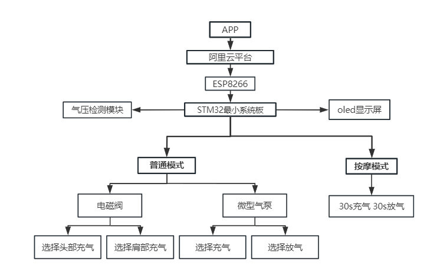

02System walkthrough
Pumps, tubing, bench wiring and OLED status.
系统实物与控制板演示
Undergraduate capstone · Shenzhen University · 2024
An STM32 controller brings together pumps, valves and a multi-chamber soft structure for a neck-support prototype.
面向颈脖理疗的智能软体机器人 · 本科毕业设计实机展示
Explore the demonstrations 中文项目说明 ↗Original recordings from the graduation presentation
Pumps, tubing, bench wiring and OLED status.
系统实物与控制板演示
The soft structure and controller on the test bench.
软体气囊与台架联调
Local control, pneumatic actuation and remote interaction

This academic prototype was documented in my 2024 graduation thesis and presentation. The original videos preserve the demonstration as recorded. They show engineering functions, not clinical outcomes.
The repository preserves the final firmware snapshot. Cloud initialization and pressure-threshold statements are commented out in that source configuration; the graduation materials document those experiments separately. See the project README for hardware details and source navigation.